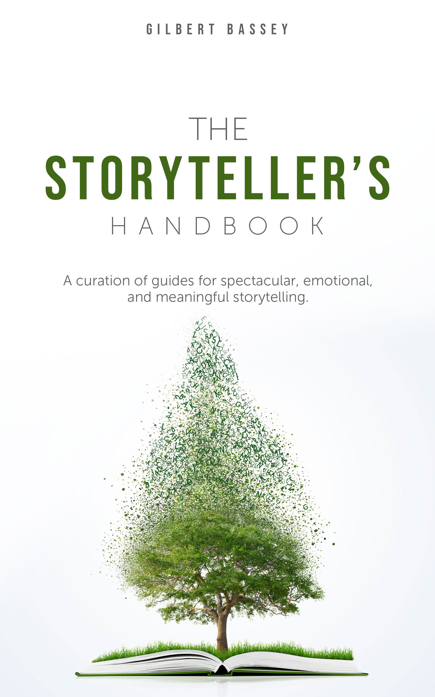

A 4-week storytelling course
Take your story from idea to finished draft to published, in 4 weeks.
Enroll Now — ₦30,000Registration opens April 6 · Course starts June 1, 2026
Every story you admire was built, not born.
Whether you're starting your first draft, trying to finish one, or looking to sharpen work you've already done, this course teaches the principles behind stories that move people. From idea to structure to publication.
Pre-recorded. Watch at your own pace. Lifetime access.
Weekly calls with Gilbert. Ask questions, get feedback on your work.
The Storyteller's Handbook. A complete guide to storytelling craft, yours to keep.
2-3 standout students get a 1-on-1 consultation with Gilbert. Chosen by story quality and class engagement.
19 lessons across 4 modules. From raw idea to published story.
What makes a great story and how to find the right idea.
Character, plot, theme, and the structure that holds your story together.
How to finish a quality first draft and find your voice along the way.
How to name, pitch, and self-publish your story.

170 pages of storytelling craft, distilled into a single book. Character design, plot structure, theme, dialogue, pacing, world-building. Everything you need to build a story that moves people.
This isn't a workbook you'll forget about. It's a reference you'll return to every time you sit down to write. Long after the course is over, this book stays on your desk.
Pre-recorded video lessons you can watch at your own pace. Focused and practical, no fluff.
Every week, we get on a live call. Ask questions, get feedback, learn from other students.
Everyone starts together on June 1. Accountability, community, and momentum.
Whether you're writing a novel, memoir, screenplay, or stage play, the principles in this course apply. Good storytelling is good storytelling.
Gilbert Bassey is the author of A Decent Man, a moral thriller with a 4.40 rating on Goodreads from 133+ ratings. He writes Lightbringer, a weekly newsletter read by over 15,000 people.
He studied screenwriting, spent years teaching storytelling through the Learn Storycraft platform, and wrote The Storyteller's Handbook, a 170-page guide to the craft.
This course is everything he's learned about what makes stories work.
Reviews of A Decent Man, Gilbert's debut novel. 4.40 on Goodreads.
"The plot is built like a carefully laid puzzle. Intricate webs unravel with every turn of the page, subtle clues planted in plain sight."
Francis Sule
"This does not read like a debut novel at all. It's emotionally driven, thoughtful, and incredibly well-crafted. Every character feels real."
BooktrovertMma
"Haunting, high velocity. Short chapters feel like a ticking clock. Each chapter is a mini climax that keeps you hooked."
Chika
"The book doesn't rush its ideas; it allows moments to breathe, making the emotional weight feel earned rather than forced."
Maxwell
"The story moves in tight, scene-like beats, which gives the book a clear visual rhythm."
Naija Book Bae
"Brilliant pacing shifts and remarkable character development."
Overuwa
"It quietly does both — entertain and disturb."
Grace GEO
"The story felt painfully human; quiet, honest, and deeply moving. It doesn't shout but still says so much."
Alicia
Reviews from readers of The Storyteller's Handbook and Learn Storycraft articles.
"I learned an incredible amount about story writing in under 25 minutes! He is a clear, cohesive, and well-structured teacher. I advise anyone even toying with the idea of writing fiction to read through Gilbert's work to immediately elevate your understanding."
Kristy Lynn — Medium
"If this guide was being sold as a stand-alone piece, I would buy it. You took something that I recently began to understand and added new dimensions to it."
Merick Vaughn — Medium
"This article is seriously great — it hits all the main points all in one place. Definitely worth printing out and saving."
Mark Marderosian — Writers Helping Writers
"Thanks for pulling back the curtain to explain one way to do it well."
Becca Puglisi — Writers Helping Writers
"Good stuff you spilled here, no lies. These writing tips translated to almost all life facets."
Nombuso Makhubu — Medium
"I think I now understand what's wrong with the current ending. Many thanks."
Vivienne Sang — Writers Helping Writers
"After reading this post, now I want to try my hand at writing a happy-sad ending. I learned something new."
Ingmar Albizu — Writers Helping Writers
"People who don't take this approach may have eventual success, but they will have to work harder at it."
Grace Topping — Live Write Thrive
"This article is wonderful!"
Bradley Harper — Medium
I spent years figuring out what makes a great story.
This course is everything I learned.
One-time payment. Lifetime access.
Early bird: ₦25,000 with code EARLYBIRD — ends April 27
Registration opens April 6. Course starts June 1, 2026.
Registration opens April 6 and closes May 31, 2026. The course begins June 1, 2026. Everyone starts together as a cohort.
Lifetime. The pre-recorded lessons are yours forever. The live Q&A calls run for 4 weeks during the cohort.
No. The second lesson is specifically about finding and picking the right idea. You can come in with nothing and leave with a story.
All live Q&A calls will be recorded and shared with the cohort. You won't miss anything.
The principles apply to fiction, memoir, and creative nonfiction. Good storytelling is good storytelling.
Email me at gilbert@gilbertbassey.com
Ready to elevate your storytelling?
Enroll Now — ₦30,000